Training module only • Professional offline learning UI
01
Risk path: traffic looks Pakistani only at the final visible exit.
02
Direct non-PK traffic is denied by the website geofence.
03
Public PK, MOFA VPN, and PK:UNO are shown as distinct allow paths.
Clear, uncluttered flowcharts for allowed access, denied access, and bypass-risk access.
This training interface explains how a geofenced Pakistani website such as POF.PK may allow or deny requests. The diagrams below are rebuilt with cleaner spacing, exact arrow directions, and animated packet-flow lines that do not overlap text.
Live access telemetry
policy-stream.geo
External
Relay / .PK IP
POF.PK
Possible through public PK IPs, MOFA connectivity with VPN, or PK:UNO if policy rules match.
Blocked by geofence and logged with source country, ASN, and reason code.
Requires more validation than country-only IP geolocation.
IP
IP Geofencing
Country-level filtering is quick and scalable, but by itself it is not foolproof. The target only sees the visible source IP.
TR
Trusted Routes
Organization-approved paths such as MOFA connectivity with VPN and PK:UNO provide stronger trust because they are tied to defined routes and governance.
SOC
Defender Objective
Identify who should be allowed, who must be denied, and which local-looking requests require extra scrutiny because they may hide upstream origin.
Main Requirement
Regenerated animated diagrams
All diagrams below are rebuilt for clarity: no clutter, no moving dots over text, clean spacing between nodes, and exact arrow direction for every flow segment.
Animated Flowchart 01
Attacker → Anonymity Framework → Zombie/Bot .PK IP → Target: PK (POF.PK)

What it means
The request is not coming directly from the real attacker to the site. Instead, the traffic is passed through an anonymity path and exits through a Pakistani-visible node.
Why it is risky
If the site trusts only the last visible source IP, it may treat the traffic as local even though the real operator is somewhere else.
Defender lesson
Use geography as only one signal. Combine it with route trust, ASN intelligence, proxy detection, device trust, identity, and behavior monitoring.
Animated Flowchart 02
Attacker --x--> Target: PK (POF.PK) • Website geofenced, access denied

What it means
This is the clean baseline case. A direct request arrives from outside the approved geographic boundary and is evaluated openly by the geofence.
Why the site denies it
The visible source does not satisfy the PK access rule and does not match any special trusted path such as MOFA connectivity with VPN or PK:UNO.
Defender lesson
Denied traffic is still useful telemetry. Repeated denials may indicate probing, brute-force attempts, or an adversary mapping restricted services.
Animated Flowchart 03
Allowed access: Target: PK (POF.PK) • (a) All PK IPs • (b) MOFA connectivity with VPN • (c) PK:UNO

What it means
Three distinct routes can be allowed: public PK IPs, MOFA connectivity with VPN, and PK:UNO. Each one is a separate policy category.
Why the paths differ
All PK IPs satisfy geography, while MOFA VPN and PK:UNO provide stronger trust because they are tied to specific approved routes and governance.
Defender lesson
Even allow paths should be documented with owner, purpose, and review cycle so exceptions do not become unmanaged long-term openings.
Additional Supporting Diagram
Geofence decision engine
A professional website should not rely on geography alone. This section summarizes the layered decision process.
1
Capture
Source IP, request, time, session.
2
Geo + ASN
Country, provider, ASN, proxy/VPN hints.
3
Trust Route
MOFA VPN, PK:UNO, or public PK category.
4
Risk Score
Behavior, anomalies, and rate signals.
5
Decision
Allow, deny, or alert with audit logs.
Why this matters
A request that appears Pakistani may still be suspicious. Better decisions come from combining technical signals rather than trusting one field alone.
Best practice
Every rule should return a reason code so analysts can explain why the access was allowed, denied, or escalated.
Governance
Special routes like MOFA connectivity with VPN and PK:UNO should be reviewed periodically so outdated exceptions do not become long-term weaknesses.
Defender / SOC Understanding
How the scenarios should appear operationally
Allowed traffic indicators
- Visible source matches a PK access category or trusted route.
- MOFA VPN or PK:UNO route satisfies policy conditions.
- Behavior is normal for the user, device, and service.
- Allow decision is fully logged and reviewable.
Denied traffic indicators
- Request comes directly from non-approved geography.
- No trusted exception route is present.
- Site returns a deny page and stores the reason.
- Repeated denials can indicate reconnaissance.
Bypass-risk indicators
- Visible source appears PK but belongs to unusual ASN or relay infrastructure.
- Traffic looks automated or inconsistent with the claimed route.
- Fresh PK-looking source suddenly hits sensitive pages.
- Policy should alert, step-up, throttle, or investigate.
Assessment